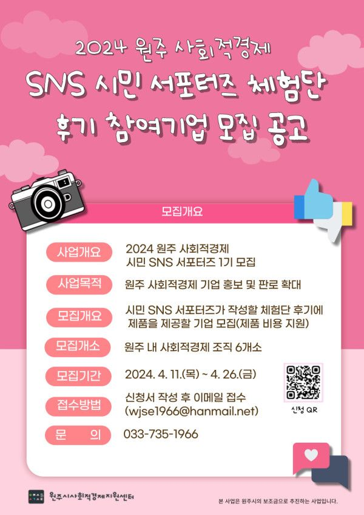

원주시사회적경제지원센터에서는
사회적경제조직들의 판로 확대 및 사회적 가치 확산을 위한 인식 제고 활동의 일환으로
시민들이 다양한 사회적경제 소식을 전달하는 [원주 사회적경제 SNS 시민 서포터즈 1기]
체험단 후기 활동에 참여할 기업을 모집하오니
많은 참여 바랍니다.
자세한 내용은 첨부된 공고문을 참고해주시기 바라며,
SNS 홍보를 통해 기업 제품을 알리고 싶은 사회적경제 조직들의
많은 참여 바랍니다.
*모집 기간 : 2024. 4. 11(목) ~ 4. 26(금)
*모집 대상 : 기업(식품 포함) 제품의 SNS 홍보가 필요한 사회적경제 기업
*모집 개소 : 6개소 모집
*사업 내용 : 서포터즈가 체험하고 후기 작성할 수 있는 사경 기업 제품 제공.
1개소 당 최소 8개 제품 제공(센터에서 비용 지원)
*지원 혜택 : 시민 인플루언서를 통한 제품 SNS 홍보
홍보 및 마케팅 비용 절감 효과
*발 표 : 2024. 4. 29(월) 홈페이지 게시 및 개별 발표
*문 의 : 033-735-1966
많은 참여와 관심 부탁드립니다:)